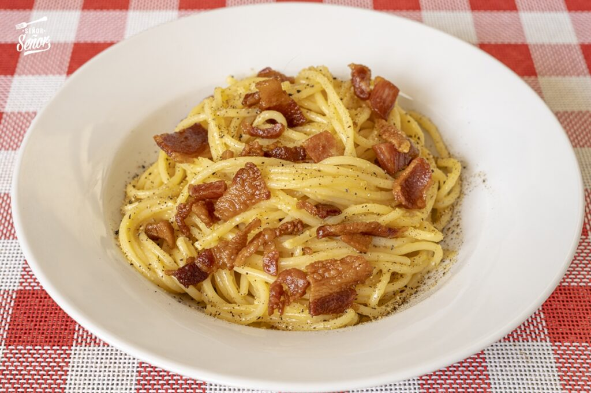

Tornar a l'índex
Pasta carbonara, un clàssic italià.

Ingredients
- 200 g d'espaguetis
- 100 g de guanciale (o panceta curada)
- 2 rovells d'ou
- 30 g de formatge pecorino romà ratllat
- Sal
- Pebre negre recent mòlt
Pasos a seguir
- Posa a bullir aigua amb sal en una olla gran.
- Mentrestant, talla el guanciale a tires i daura'l en una paella sense oli fins que quedi cruixent. Reserva'l.
- En un bol, barreja els ous, el rovell extra, el formatge pecorino ratllat i una mica de pebre negre. No afegeixis sal.
- Quan l’aigua bulli, cou els espaguetis fins que estiguin al dente. Reserva una mica de l’aigua de la cocció.
- Escorre la pasta i afegeix-la a la paella amb el guanciale (fora del foc perquè no es coguin els ous).
- Afegeix la barreja d’ous i formatge a la pasta i remena ràpidament perquè s’integri i quedi cremosa (no s’han de quallar els ous).
- Si cal, afegeix una mica d'aigua de cocció per ajustar la textura.
- Serveix immediatament amb més pecorino i pebre per sobre.